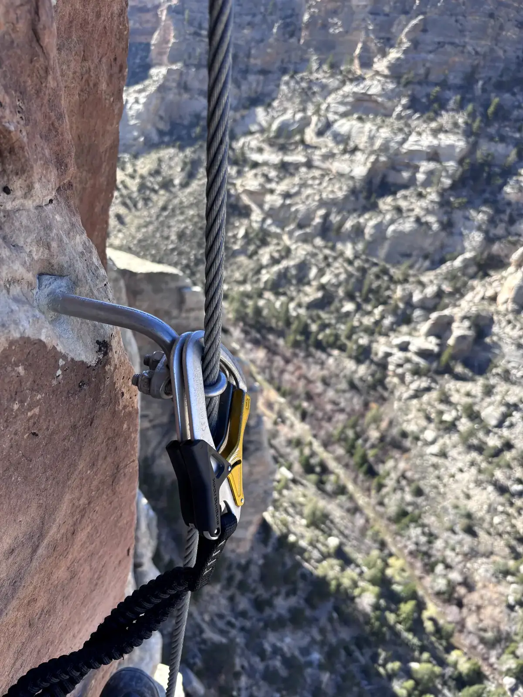
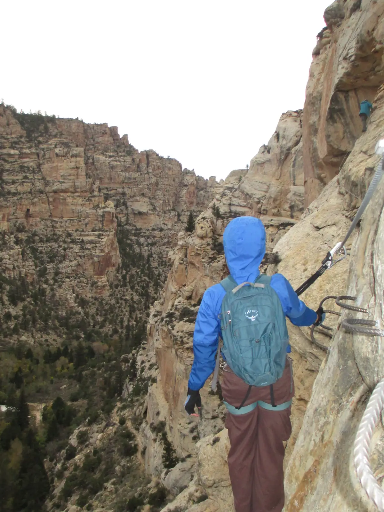
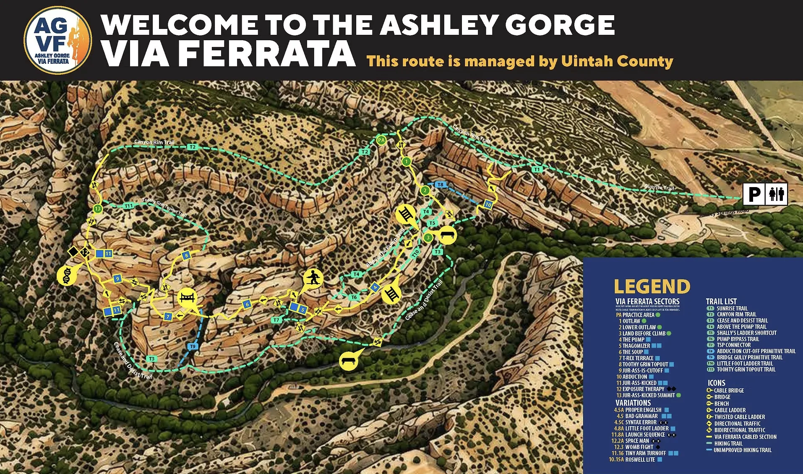
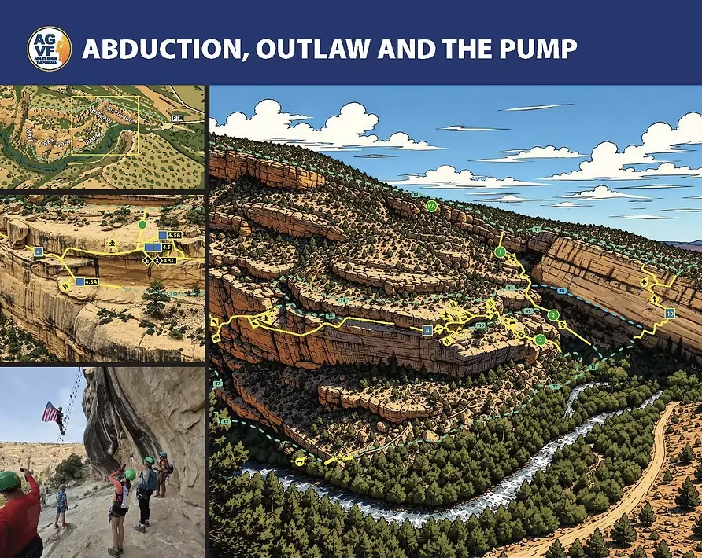
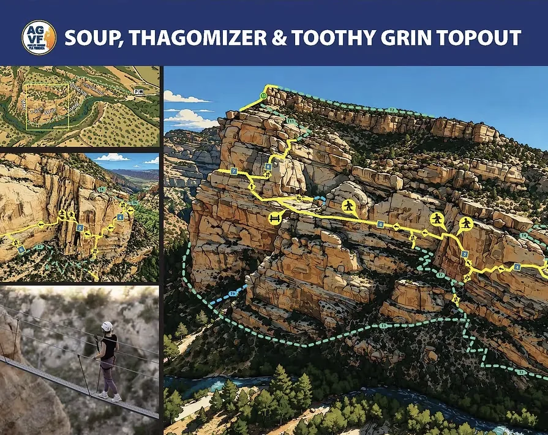
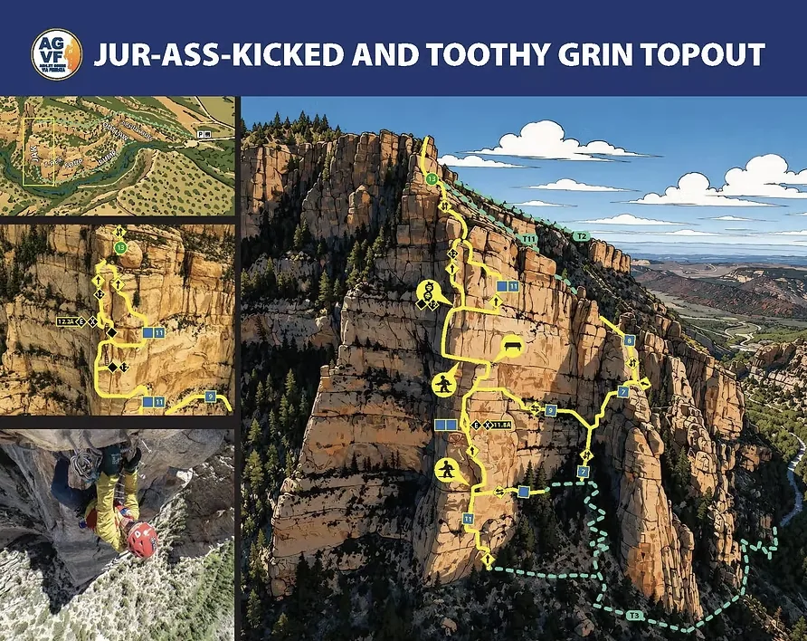
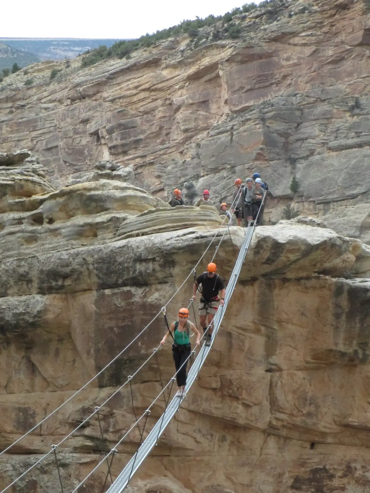

Number one
Gloves.
The steel cable gets cold in the morning and hot by midday, and it's rough on bare hands for hours. Bike, work or via ferrata gloves all work. Don't skip them.
What to bring, when to go, the route, how hard each section is, and answers to common questions. Read it once before your trip.

The steel cable gets cold in the morning and hot by midday, and it's rough on bare hands for hours. Bike, work or via ferrata gloves all work. Don't skip them.
At least 2 liters per person. Most of the route is in full sun and there's no water at the trailhead.
You'll be out 3 to 8 hours. There's nowhere to buy food near the gorge.
The rock reflects a lot of sun. Bring a hat or sunglasses if you have them.
Hiking or approach shoes with grippy soles. No sandals or worn-out sneakers.
Save your locker code and QR pass before you leave Vernal. Service at the trailhead depends on your carrier.
Keep your hands free for the cable. Use the porta potty in the lot before you start. There's none on the route.
If you're fast and in a small group, be at the trailhead by sunrise, when the route opens. It gets busy, even on summer weekdays.
Have your locker code and QR pass ready before you get to the trailhead.

The Ashley Gorge via ferrata is split into numbered sections, connected by hiking trails. Pick the sections that fit your group, and use the trails to head out early if the weather turns or someone's had enough.




There's a short practice section near the start. Try clipping and unclipping there before you commit to the route.
The hiking trails link the sections, so you can leave partway. Look at the map before you go.
The county has route maps and videos that help first-timers find their way. A few minutes beforehand saves a lot of guessing on the wall.
Each section on the map gets a number and a letter, like 2B or 4C. The number is how hard the climbing is. The letter is how hard it is to get out once you've started.
Mostly walking. The cable is a handrail on the exposed bits.
Some effort. You need to be fine with heights.
Steep, physical and exposed. Not for first-timers.
Steep climbing that takes basic rock climbing moves.
Takes real upper-body strength.
For experienced rock climbers only.
Shorter, close to the car, with easy ways out.
Longer and more exposed, with fewer places to bail.
Long, remote and exposed. Few or no ways out once you start, and a long walk back.
Stick to 1s and 2s with an A or B. Save the 3s and up for a second trip.
The county closes the route when it's raining or snowing. Wind doesn't close it, but the bridges sway a lot. If you hear thunder or see lightning, get off the cable.
Loading the forecast for Ashley Gorge…
If the county closes the route on a day you booked, you choose a full refund or new dates. We'll email you either way.
Forecast from Open-Meteo. See the full National Weather Service forecast.

Neither covers misuse or gear that isn't returned.
Replacement cost is $50 for a helmet, $60 for a harness and $80 for a lanyard.
No. A via ferrata is built so non-climbers can do it. You stay clipped to a steel cable the whole way. You do need to be comfortable with heights and fit enough for a long day of hiking and ladder climbing. If it's your first time, start with the easier green and single-blue sections.
Most groups spend 3 to 8 hours, depending on which sections you do, how fast your group moves and how busy it is. Plan for a full morning at least.
Climbers must weigh 90 to 265 lb and have a vertical reach of at least 62 inches. You must be 18 to rent. Climbers aged 14 to 17 can go with a parent or guardian who stays with them on the route.
A certified climbing helmet, a harness with adjustable leg loops, and a via ferrata lanyard with two carabiners and an energy absorber. That's everything the county requires.
Yes. Rent a lanyard only if you have your own helmet and harness, or add just a helmet or harness. Your own gear must be certified for climbing.
The lockers are open 24/7. Pick up any time on your first rental day, and return by 11:59 pm on your last day. Returning early is fine.
1 to 4 days online. One or two days cost the same. Days 3 and 4 add a small fee per item. For more than 4 days, call or email us.
Every pair of full kits or lanyards in one booking saves $10, up to two pairs: 2 kits for $80, a kit and a lanyard for $65, or 2 lanyards for $50. It's applied at checkout automatically.
Gear Protection covers accidental damage from normal use, skips the card hold, and lets you cancel for free until your first day starts. With the card hold, we hold the money on your card on the day of your rental ($150 per kit, $80 per lanyard, never more than $250) and release it when the gear is back. Either way, you're responsible for damaged or lost gear up to its full value.
With Gear Protection, you can cancel for a full refund any time before your first day starts. Without it, you can cancel for free up to 7 days before. After that you can't get a refund, but you can change your dates.
The county closes the route for rain and snow. If it's closed on your booked day, you choose a full refund or new dates.
Call or text (208) 473-1751, or email trailsiderentalsvernal@gmail.com. Keep your pass and booking code handy so we can help quickly.
Verizon and T-Mobile work at the trailhead. AT&T is spotty but usually loads a page. Save your locker code and QR pass before you leave town either way.
Yes. Uintah County requires its own waiver for every climber, separate from our rental agreement. Sign it online before your trip.
Late returns are charged one day's rental rate for each day late. Gear that isn't returned is charged at replacement cost: $50 for a helmet, $60 for a harness and $80 for a lanyard.
Still have a question? Call or text (208) 473-1751 or email trailsiderentalsvernal@gmail.com.